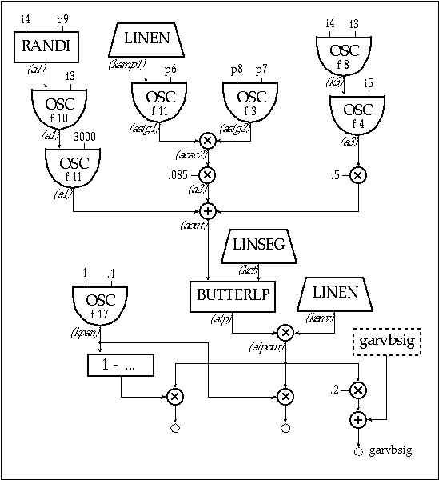
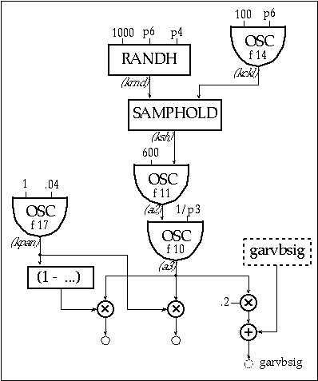
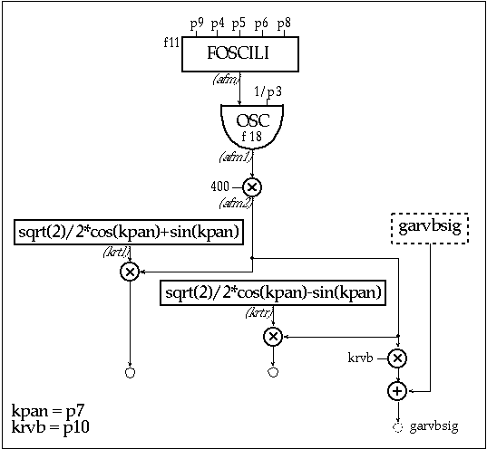
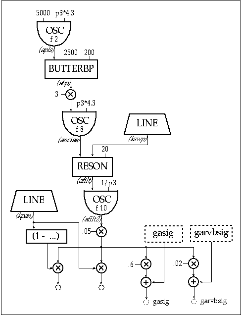
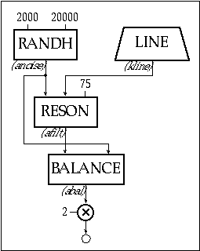
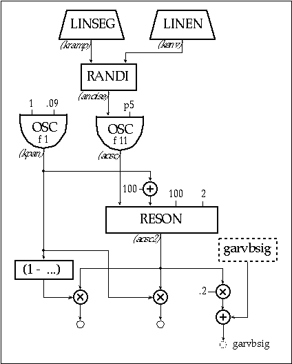

I am an Ambient music composer who is fascinated with the history of computer music. I have composed many albums of both Ambient and experimental electronic music using a variety of synthesizers, samplers and outboard effects, but I have had this interest in composing a piece of music that would be created entirely in the computer — no samplers, no analog synths, no external digital signal processing (DSP) and no drum machines — just my computer, a soundcard, a DAT machine and me. This work would travel a path directly from my computer straight to the listener’s ears, mediated only by an invisible layer of bits. When this idea first germinated around a year and a half ago, I became more and more intrigued with it. My original plan was to use TurboSynth, ProTools and Soundhack as some of my tools, but that plan was redirected by a meeting I had with a Csound composer who helped inspire a radical change in my focus.
Around the same time as that meeting, I was experiencing another shift: I no longer felt compelled to work in the Techno Ambient genre but instead wanted to chart a different course. I wanted to create work that drew upon my technical background in audio, my interest in computer languages and my readings in media criticism. While being pulled in this oblique artistic direction, my interest in learning Csound had been rekindled. It was not until I compiled a few Csound examples, that I realized I had found the system that would help me accomplish my goals, and that Csound would give me access to many different tools with which to work. Through mastering the fundamentals of Csound I have finally been able to sculpt Ambient soundscapes in an environment made from little more than cold silicon and code.
I have been asked to write an Ambient Csound piece for this book and to chronicle my progress. Given my interest in grafting the synthesis techniques found in early computer music onto an emergent new sound in Ambient music, this project would help me develop my work in this area, while having an interesting journey to share with others who are being introduced to Csound.
History
"The meta-designer creates context, not content"
- Gene Youngblood
"The medium is no longer the message, the tool has become the message"
— Kim Cascone
I have had the privilege of growing up alongside the evolution of electronic music. I saw the late sixties become dominated by the shocking newness of "computer culture," and I reveled in the new electronic sounds that this era ushered in. I can safely say that I never had to work at developing a taste for electronic music: the more synthetic the sound, the more I liked it. My first experience of being
transported by electronic music was while sitting in a theater watching the film "Forbidden Planet" — the soundtrack by Louis and Bebe Barron probably shaped my vision of creating a sonic space more than any other experience. As a child, most of my exposure to synthetic sounds was through pop music and television. In the late 60's, a few television stations nurtured a climate of experimentation and let their engineers run amok with new technologies. Typically, this experimental video work was accompanied by an electronic music soundtrack, and a good example of this was a project called "Limbo," which aired in 1968 on WCBS-TV. The soundtrack was a stark, alien-sounding, electronic score that also made a deep impression on me. Later, while a student at the Berklee College of Music, I was exposed to many different ideas about music, but it was the electronic music classes I took there that helped me develop a different way of hearing and altered my process of organizing sound.
Although I had been working with analog synthesizers, I did not begin working with computers until after my studies at Berklee, when I became a student of electronic circuit theory in night school. I had realized my dream of owning a synth by building my own analog modular synthesizer from kits. Shortly afterwards, I needed a sequencer for a piece I was working on (mind you this was 1978 - pre-MIDI) but analog sequencers were still prohibitively expensive. I had heard from a friend that a
KIM-1 microcomputer could be programmed to behave like a sequencer. After buying a KIM-1, I started studying 6502 assembly language, and after many weeks managed to write a crude sequencer. My little sequencer program spit out 8-bit words to the input and output (I/O) ports, which were fed to a digital-to-analog-converter (DAC) that controlled my synth's oscillators — this was my first entry into computer music.
I have also been very interested in environmentally altered sounds. I remember as a child becoming quite entranced by the shifting cascade of harmonics a distant propeller plane created while I was taking a bath in my reverberant tile bathroom. It was at this time that I became highly aware of the phenomenon of sound filling space while defining it. I have consciously striven to recreate that sound in my work. I find the idea of creating an electronic space that transports the listener into their own space very compelling. In this way "space" transforms into "place" for the listener. In most of my work with electronic music over the past ten years, I believe I have accomplished this effect with varying degrees of success.
Building Context by Resurrecting Historical Sounds
"Often the hardware technology of the 90's uses the software technology of the 70's and 80's to realize the musical concepts of the 60's. That is the rub."
— Paul Berg, Computer Music Journal (20:3)
In my experience of having operated a record label that released Ambient, Techno and experimental music, I often encountered younger artists fetishistically collecting analog synthesizer gear from the 70's & 80's, recreating sounds from an era of electronic music they remember from childhood. While it satisfied some nostalgic need for them, they often used these sounds without knowing anything of their history. Concerned with this lack of depth, I focused my efforts on understanding the history of synthetic sounds from a grammatical point of view, and began resurrecting sounds developed by early electronic and computer music composers. In my last release titled "Anechoic," (Silent Records SR9599) I spent many days in my studio designing synth patches that were similar to a group of historical synth sounds I wanted to cite in my work. I used classic techniques such as sample and hold, FM, noise band glissandos, ring modulation and vocoding in order to lift a certain number of elements from works, objects, pre-existing messages, and to integrate them in a new creation in order to produce an original totality manifesting ruptures of diverse sorts.
In my current work, I am focusing on resurrecting the historical vocabulary of computer music, and embedding it in an Ambient context. One source of information that helped establish a schematic for my work is Jean-Claude Risset's "Introductory Catalogue of Computer Synthesized Sounds" (1969). Not only did this provide me with a working schematic of historical instruments and techniques, but also presents an interesting device with which to frame these ideas: the catalogue. This method of identifying objects (in this case software objects functioning as instruments) seems to be overlooked by those searching for new forms of context. Risset's catalogue serves the dual purpose of tutorial and artistic statement: bringing others to a level of understanding by openly displaying the inner workings of his instruments with examples of code and schematics of unit generators.
Although many composers working in the field of computer music probably do not share my interest in recycling early computer synthesized sounds, there is an emergent school of composers who are concerned with similar aesthetic issues. This group of composers are on the fringe of the Techno Ambient movement and have created a new climate of experimentation by working with digital audio tools such as MQ analysis, phase vocoding, spectral mutation, and granular synthesis. The result has been the generation of a new vocabulary which casually borrows from the historical sonic reservoir of computer music. This new breed of electronic musicians are hacking new forms of experimental Ambient music by reaching down to its "atomic" level and tweaking the fabric of sound. This is an important movement that combines academically developed synthesis techniques, street culture usage and a deconstructionist aesthetic.
Organizing Sound
The philosophy behind Ambient music can best be described as an open system of organizing sound which when listened to stimulates a resonance in the listener, thereby inducing a trance-like state. When creating Ambient music, a non-formal method of "composition" comes into play. The success of this method is reliant on the composer's ability to create an experience in which the listener imposes an organized structure on seemingly static material. A similar psychoacoustic phenomenon happens to people who travel on jet planes: some people report hearing "music in the Ambient noise of the plane." A similar effect can happen while listening to Ambient music. Rather than assigning a musical value to the material, the listener assigns a visual value, one usually conjured from personal experiences and fantasies. Creating music that achieves this effect is problematic because there are few historical models to work from. This way of organizing sound is mostly an intuitive process that has grown out of recycling familiar and established patterns found in other Ambient works. This method of creation is wide spread throughout electronic media and its best example is the rock musician who doesn't know what a I-IV-V progression is, but can write a hit song with a pop structure (A-A-B-A, etc). using three chords. This is similar to speaking a language, yet not knowing its formal grammar. It is a type of pattern emulation that we use for survival. Contemporary Ambient music is created from this sort of pattern emulation, and usually does not start with a preconceived structure, per se. The process typically starts with a palette of sonic textures that, when played, will suggest a structure.
I start my compositions in a similar fashion by creating a library of patches on various synths and/or samplers, playing those sounds with a keyboard, and when these textures start to reveal melodic or harmonic ideas, I record them into a sequencer. After recording several tracks of ideas, I massage this raw data into final form by stretching and pulling it into a coherent structure using editing tricks, fades, panning, instrument doubling, transposition and time scaling. In essence, tweaking the material until the "resonance" effect takes place.
Precompositional Phase of "blueCube"
"One of the motives for being an artist is to recreate a condition where you're actually out of your depth, where you're uncertain, no longer controlling yourself, yet you're generating something, like surfing as opposed to digging a tunnel. Tunnel-digging activity is necessary, but what artists like, if they still like what they're doing, is the surfing"
— Brian Eno ("Aurora Musicalis". ArtForum Magazine. 24:10. 1986)
Before I started designing my Ambient piece in Csound, I spent many hours listening to my computer music collection. I compiled many Csound examples, and I made copious notes about what sounds or synthesis techniques appealed to me. I then listened to some of my own work and made notes about what type of synthesis I tended to gravitate towards. While designing the Csound instruments for "blueCube," I had to alter my creative process: instead of just digging through my gear closet, hooking up some synths and finding the appropriate patches, I now had to think in terms of synthesis theory, programming, and instrument design in order to start constructing a piece. Instead of "knob twiddling," I have come to view the process of composing with Csound as "code twiddling."
After studying the manual for a few weeks and working through the tutorials, I managed to get the basic syntax of Csound down without much problem. I started studying instrument design by taking other composers’ instruments and drawing them out on paper in flowchart form. I took the scores and isolated a particular instrument by commenting out all other instruments except the one I wanted to listen to. I would then start to modify that instrument in various ways so I could hear the effect my code was having. I recreated some of these instruments in a visual programming environment called Patchwork, and then compiled them to see if the resulting code matched the original instrument code. While flowcharting and studying these instruments and scores for a few weeks, I took the opportunity to refresh myself on various synthesis techniques by reading through key books on computer music. I also started studying some of the instruments from the Amsterdam Catalog of Csound Computer Instruments and modified some of them, in order to explore their range of possible sounds.
Instruments for "blueCube"
My plan was to design two types of instruments for "blueCube": instruments that resembled patches I have designed on analog synths for use in previous work, and instruments that imitate historical computer music sounds which could also work in an Ambient music context. I found that as I wrote my code I could build the instrument I was working on little by little, adding new ideas as I went along. It was easier to work on my instruments as individual files in order to explore my ideas quickly and isolate the instrument from others so I could better hear what I was developing. Once I got the instrument tweaked to my liking, I pasted it into the main .orc file and commented my code extensively so I could come back to it later on and know what was going on. On hearing the instrument played in musical context, I would then make changes in order to balance it in the piece. The score developed simultaneously as I added sections of note events and parameter fields (p-fields), in order to try out new ideas and experiment with different opcodes. This process of composing with a standard numerical score was similar to creating a piece in MIDI by entering all the values into the event editor of a sequencer. It is no wonder that many early computer music pieces were under 5 minutes in length!
Three Branch
One of the first instruments I started developing was based on Jean-Claude Risset's "Drum Instrument." This instrument appealed to me for a few reasons; 1) it could generate a wide range of interesting sounds from a simple design — perfect for someone on the learning curve, 2) the instrument contained sub-instruments that performed various synthesis techniques and 3) it was modular, which meant that I could modify or swap out these sub-instruments in order to mold it to my aesthetic needs. After making a few modifications, my first instrument combined additive synthesis, noise filtering, ring modulation, and a sinewave oscillator. Since each one of these techniques is historically associated with electronic and computer music, this was a good choice to start with.
|  |
| instr 1 | |||
| i1 | = | p5*.3 | |
| i2 | = | p4*.98 | |
| i3 | = | 1/p3 | |
| i4 | = | p5*.6 | |
| i5 | = | p4 | |
| kfreq1 | = | p6 | |
| kfreq2 | = | p7 | |
| kamp2 | = | p8 | |
| ;1 Noise Branch | |||
| a1 | randi | i4, p9 | |
| a1 | oscil | a1, i3, 10 | |
| a1 | oscil | a1, 3000, i1 | |
| ;2 RM Branch | |||
| kamp1 | linen | kamp2, p3*.2, p3, p3*.2 | |
| asig1 | oscil | kamp1, kfreq1, 11 | |
| asig2 | oscil | kamp2, kfreq2, 3 | |
| aosc2 | = | asig1*asig2 | |
| a2 | = | aosc2*.085 | |
| ;3 Low Sine Branch | |||
| k3 | oscil | i4, i3, 8 | |
| a3 | oscil | k3, i5, 4 | |
| a3 | = | a3*.5 | |
| iamp | = | p8*.4 | |
| aout | = | a1+a2+a3 | |
| kcf | linseg | 0, p3/2, 850, p3/2, 0 | |
| kpan | oscil | 1, 0.1, 17 | |
| alp | butterlp | aout, kcf | |
| kenv | linen | iamp, p3*.8, p3, p3*.2 | |
| alpout | = | kenv*alp | |
| outs | alpout*kpan, alpout*(1-kpan) | ||
| garvbsig | = | garvbsig+(alpout*.2) | |
| endin |
Sample and Hold
I have always been fond of the effect created by a Sample and Hold (S/H) controlling a sine wave oscillator. It indexes electronic music from the 60's and is also a sound effect often used in Hollywood films when describing what computers (complete with banks of blinking lights) sounded like. In addition to its ability to conjure visions of IBM 360 mainframes, by adjusting the clock rate on the S/H you can create the classic "babbling brook" effect, by feeding the S/H output to a resonant filter in a state of near oscillation. This was easy enough to implement with the samphold opcode. My instrument then contained the two qualities I was looking for: historical indexing and versatility.
|  |
| instr 2 | ||
| krt | = | p6 |
| isd | = | p4 |
| krnd | randh | 1000, krt, isd |
| kclk | oscil | 100, krt, 14 |
| ksh | samphold | krnd, kclk |
| a2 | oscil | 600, ksh,11 |
| a3 | oscil | a2, 1/p3, 10 |
| kpan | oscil | 1, .04, 17 |
| asig1 | = | a3*kpan |
| asig2 | = | a3*(1-kpan) |
| outs | asig1, asig2 | |
| garvbsig | = | garvbsig+(a3*.2) |
| endin |
Frequency Modulation
I once visited the studio of a computer music composer back in the late 70's who had a Synclavier. When I walked into his studio he was playing a piece he had been working on that utilized the technique of Frequency Modulation (FM). The sound resembled those reverberating harmonics I had heard as a child. Ever since that experience I have been fascinated with the rich palette of sounds that can be created by using FM. This was the next method of synthesis I chose to work with, and I started by designing a simple FM instrument using the foscili opcode. I wanted to create an ornamental sound that made use of a backwards envelope and a constant intensity pan.
|  |
| instr 3 | ||
| kcps | = | p4 |
| kcar | = | p5 |
| kmod | = | p6 |
| kpan | = | p7 |
| kndx | = | p8 |
| kamp | = | p9 |
| krvb | = | p10 |
| afm | foscili | kamp, kcps, kcar, kmod, kndx, 11 |
| afm1 | oscil | afm, 1/p3, 18 |
| afm2 | = | afm1*400 |
| krtl | = | sqrt(2)/2*cos(kpan)+sin(kpan) |
| krtr | = | sqrt(2)/2*cos(kpan)-sin(kpan) |
| al | = | afm2*krtl |
| ar | = | afm2*krtr |
| outs | al, ar | |
| garvbsig | = | garvbsig+(afm2*krvb) |
| endin |
Clicky Filter Sweep
A classic effect used often in Ambient music. This type of sound was used a lot in European electronic music in the 70's. It conceptually combined the effects of filter sweep and repetitive quality of echoes, but instead of decaying into the mix, these effects created an "ornamental" sort of texture. I implemented this with a noise sound source, which I filtered and used an exponential envelope on, and then filtered again using the reson opcode to achieve the filter sweep effect. To augment this effect, I added some panning to create movement and a delay, in order to create a "call and answer" type of effect.
|  |
| instr 4 | ||
| aclk | = | p3*4.3 |
| apls | oscil | 5000, aclk, 2 |
| abp | butterbp | apls, 2500, 200 |
| abp | = | abp*3 |
| anoise | oscil | abp, aclk, 8 |
| kswp | line | 1800, p3, 180 |
| afilt | reson | anoise, kswp, 20 |
| afilt2 | oscil | afilt, 1/p3, 10 |
| kpan | line | 0, p3*.8, 1 |
| afilt2 | = | afilt2*.05 |
| outs | afilt2*kpan, afilt2*(1-kpan) | |
| garvbsig | = | garvbsig+(afilt2*.02) |
| gasig | = | gasig+(afilt2*.6) |
| endin |
Delay
Delay is an important tool in the studio. Not only is it used to stretch the envelope of a sound event by creating a lingering persistence of it, but it can also be used to create interesting stereo effects by panning the delayed and dry signals to opposite sides of a mix. I created a plain vanilla global delay that I used primarily for the clicky filter sweep instrument. I have also used the delay embedded within an instrument, and implemented a controlled feedback loop in order to create echoes. Delay and reverb are both important effects used in Ambient music to define a space while the sound fills that space. Delays can be configured to perform many sophisticated functions, but in this piece I used it in a similar manner to how I would use a digital delay unit in my studio.
Panning
asig*kpan, asig*(1-kpan) type of panning leaves the proverbial "hole in the middle" when it comes to panning, so I started doing a little research into other formulas that would achieve a more constant intensity type panning. I found some formulas in a few of the computer music books I used for research, and used the following constant power panning formula:
| krtl | = | sqrt(2)/2*cos(kpan)+sin(kpan) |
| krtr | = | sqrt(2)/2*cos(kpan)-sin(kpan) |
Here, krtl+krtr represent the resultant values for the left and right channels, which are then multiplied with the signal outputs. kpan represents the value of the pan function
I chose to do the math in-line and not use a lookup table in order to generate the panning function, because the inline method was easier to implement. I think a more efficient method would have been to use a pair of oscillators that pass the signal to be panned with each oscil, reading from a lookup table filled with the values for constant intensity panning. Also, I chose not to implement constant intensity panning in all my instruments and use the "hole in the middle" effect in order to lessen any masking effects.
Filter Sweeps
Lowpass filter sweeps never seem to go out of vogue, and they have been in heavy use again by current Ambient Techno musicians. Filter sweeps started to enter the pop lexicon when Moog synthesizers began being played by rock musicians in the psychedelic rock bands of the late 60's. This style of music introduced westerners to trance-inducing dronescapes that musicians would improvise over with exotic scales. In essence, the filter sweep became western culture's Tamboura instrument. Compositional structure and sonic surface became intertwined. Some of the most elegant uses of this technique can be found in Tangerine Dream's masterpiece "Rubycon." This record could almost serve as a catalog of sounds that shaped electronic music in the mid 70's. I have made extensive use of this effect in my work, partly as an attempt to recreate that "shifting cascade of harmonics" I heard as a child.
In order to recreate this effect in Csound I started experimenting with the reson opcode, but found that I had difficulty getting the exact effect that I wanted. I was not getting the quality of filter sweep I was looking for, because the reson opcode implements a bandpass filter function, but with some tweaking and layering of sounds, I ended up using the reson opcode for most of my filter sweep work.
In order to see for myself how the reson opcode behaved with white noise being fed into it, I wrote some code that would allow me to see what the frequency response looked like, by taking "snapshots" of the filter’s output using the dispfft function, while sweeping the filter downward. Additionally, I experimented with plugging in other values into the bandwidth argument to see how this would affect the filter function.
|  |
| instr 5 | |||
| anoise | randh | 2000, 20000 | ;white noise |
| kline | line | 2000, p3, 0 | ;sweep for filter |
| afilt | reson | anoise, kline, 75 | ;bandwidth is 75Hz |
| abal | balance | afilt, anoise | ;this controls peaking |
| abal | = | abal*2 | |
| out | abal | ||
| dispfft | abal, .5, 4096 | ||
| endin |
| i1 | 0 | 5 |
Noise-Band Glissando
The noise band glissando is the quintessential computer music instrument from the 60's. In the following implementation of the instrument, I have chosen to sweep the bandwidth of the noise instead of the oscillator’s frequency. This modification was an experiment, which wound up providing me with an aesthetically pleasing band of filtered noise, so I decided to keep this instance of the instrument as is. I have implemented another version of this instrument which uses the classic noise-band glissando configuration: the frequency argument of the randi is given a constant value, and the frequency argument of the oscil is swept with a linseg.
|  |
| instr 6 | ||
| kfreq | = | p5 |
| kramp | linseg | 0, p3*.8, p4, p3*.2, 0 |
| kenv1 | linen | p4, 0, p3, 10 |
| anoise | randi | kramp, kenv1 |
| aosc | oscil | anoise, kfreq, 11 |
| kpan | oscil | 1, .09, 1 |
| aosc2 | reson | aosc, kpan+100, 100, 2 |
| outs | aosc2*kpan, aosc2*(1-kpan) | |
| garvbsig | = | garvbsig+(aosc2*.2) |
| endin |
Conclusion
I have found Csound to be an extensible sound synthesis language, because its complexity has varied along with the complexity of my needs and skills. It can either be approached as an analog modular synthesizer, where unit generators are patched together to create sounds, or it can be approached like a programming language, by making use of program control and inline math to perform these same functions. This provides a good entry point for electronic music composers and programmers who are just getting started, while it can continue to provide a rich environment to work in.
The most valuable part of my experience while composing "blueCube" has been the growth I have encountered from learning about myself as an artist. Working on this piece presented me with many problems to solve, as well as provided a tool with which to help solve them. Throughout this process, I felt a little like an alchemist who has finally been allowed to pursue his work in a fully equipped laboratory. Along with this feeling of satisfaction also comes the feeling that I will be a student of Csound for a long time, exploring various synthesis techniques and discovering new applications for them in my music. "blueCube" is a small excerpt from a larger work I am working on. I hope to have a CD of experimental Ambient material ready for release next year.
Along with the all technical work facing me, there is as much work to be done on a critical level. There are important aesthetic issues I need to work through, and I am eager to see more critical discourse in the field of computer music. My hope is that my attempt to preserve the historical potency of computer music sounds by using them in a new context might help to stimulate some discourse in this area.
Acknowledgments
Special thanks to Richard Boulanger, Dave Phillips, Mike Berry, Rich Plom, Kathleen and Cage for their encouragement and support during my morph from knob twiddler to code twiddler.
References
Arveiller, Jacques. "Comments on University Instruction in Computer Music Composition" In The Music Machine ed. ed. Curtis Roads. Cambridge: MIT Press, 1989.
Attali, Jacques. Noise - The Political Economy of Music. Minneapolis: University of Minnesota Press, 1985.
Dodge, C., and Thomas, J. Computer Music: Synthesis, Performance and Composition New York: Schirmer Books, 1985.
Ernst, David. The Evolution of Electronic Music. New York: Schirmer Books, 1977.
Gather, John. Amsterdam Catalogue of Csound Computer Music Instruments http://mars.let.uva.nl/gather/accci/index.html, 1995.
Risset, Jean-Claude. "Introductory Catalogue of Computer Synthesized Sounds" and "My 1969 Sound Catalogue: Looking back from 1992" Historical CD of Digital Sound Synthesis (Computer Music Currents 13). Germany: Wergo, 1996.
Roads, Curtis. The Computer Music Tutorial. Cambridge: MIT Press, 1996.
Toop, David. Ocean of Sound — aether talk, ambient sound and imaginary worlds. London: Serpents Tail, 1995.
Ulmer, Gregory L. "The Object of Post Criticism" In The Anti Aesthetic — Essays on Postmodern Culture, ed. Hal Foster. Port Townsend: Bay Press, 1983.
Youngblood, Gene. Expanded Cinema NewYork: E.P. Dutton & Co, 1970.
Sonography:
Boulanger, Richard. "Trapped in Convert". Csound files.
Dodge, Charles. "Earth’s Magnetic Fields". Nonesuch.
Heavenly Music Corporation. "Anechoic". Silent.
"Historical CD of Digital Sound Synthesis". V/A .Wergo.
"In Memorium — Gilles Deleuze". V/A. Mille Plateau.
Microstoria. "init ding". Mille Plateau.
Microstoria. "snd". Thrill Jockey.
Panasonic. "Vakio". Blast First.
Randall, JK. "Mudgett: Monologues of a Mass Murderer". Nonesuch.
Risset, Jean-Claude. "Sud. Dialogues...". INA GRM.
Sonic Bloom. "Entropica". Freezone/CrammedDiscs.
Tangerine Dream. "Rubycon". Virgin.
Tenney, James. "Analog #1 (Noise Study)". Artifact Recordings.
Vercoe, Barry. "Synthesism". Nonesuch.